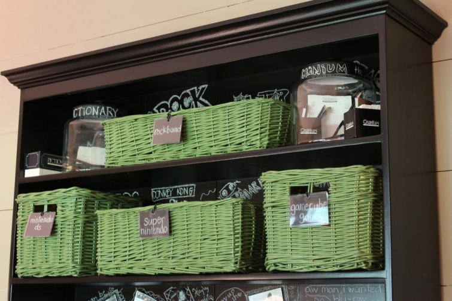
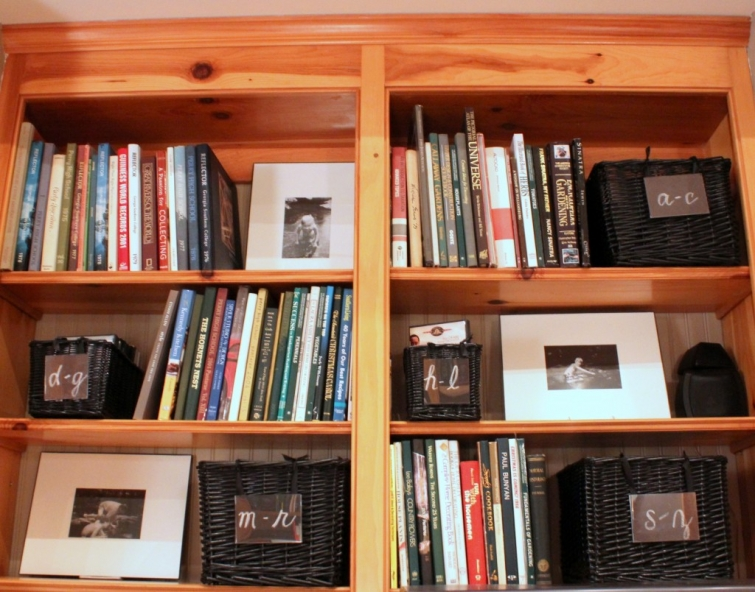

.png)
.PNG)
.PNG)
.PNG)
.PNG)
.PNG)
.JPG)
.JPG)
.PNG)
.PNG)


In my last post we looked at how baskets add texture and storage in several pretty spaces. Today I thought we would look around here at some of the baskets that are used in rooms in our house. I love that one in the top photo that holds plants on our door (and its twin is hanging on the back porch.) The green ones in the playroom, below, help keep all the game systems organized. It would be a disaster without them!

All of our movies are organized in these baskets in the great room. I have sorted them alphabetically by title and made tags with card stock and clear plastic frames. Ribbon is hot glued to the back of the frame and tied to the basket. The ones on the playroom baskets are baseball card holders.

Also in the great room is this basket holding bottled water and an ice bucket on top of a large piece of furniture.

This one in the kitchen holds magazines and computer printed recipes most of the year. At Christmas it’s where I stash the Christmas cards we receive.

This next one is in the master bathroom atop the antique cupboard that is in there. It holds extra towels that don’t fit in the linen closet. It came from Pottery Barn Kids many years ago, and I would love to find another one just like it. The laundry room is missing it!
I don’t have a recent photo of daughter’s desk baskets, but here they are in the Valentine’s post. Obviously, they hold books in her room.

Now don’t you think it’s time for another giveaway? Yes, I thought so, too. 🙂 After looking at all the photos of baskets in the last two posts, I thought a basket would be a good giveaway. And not just any basket…no sirree…I have a treat in store for you!

One of my readers, Barbara Hinkse, has had her first novel published. Isn’t that wonderful?! It is a delightful read about a widow, Maggie Martin, who has inherited an estate (that she knew nothing about) in a small town. Maggie moves into Rosemont, adopts a precious little dog named Eve, gets involved in trying to solve a political corruption mystery, and even throws a big Easter celebration at her new home in the small town of Westbury. (It was a fast read, and I want Barbara to do a sequel so that I can find out what happens to the love interest of several of the characters.) She has a website (here) if you would like to read more about her and the book.

So my giveaway Easter basket has a copy of Coming to Rosemont, a mug and box of Earl Grey tea for you to enjoy while you read, some new Caspari napkins (that I just love!), a stuffed animal version of the little puppy that Maggie adopts, a bag of my daughter’s favorite chocolate candy (what’s an Easter basket without candy??) and a chalkboard plant stake (that I forgot to put in the second photo) packaged together in a basket for one of you.
All you have to do is leave a comment on any (or all) posts published between now and Sunday, March 17 (lucky St. Patrick’s Day!) I’ll close off the entries at midnight that night, and a random number generator will choose the winner. Good luck! That wraps up all I have on baskets for now. I hope to hear from you in the comments. Here is a question to get you started:
What is your favorite Easter basket candy?


.PNG)
I recently found your wonderful blog and am reading through all of your past entries. So fun! I have admired all of your baskets displayed in the entries I have read and wonder where you find most of your baskets, especially the flatter ones with handles. Thank you. Nancy
——————————————————————–
Hi Nancy! I am glad you found Talk of the House and are enjoying the posts.:) I read your other comment about wanting another post on baskets. I don’t think there is a whole lot more to tell other than what was in the basket post. The ones you are referring to (the tray type) came from little shops here and there many years ago, and most are not even in business still. My favorite one, the one in the family room on top of the piece behind the wicker chair, came from a shop in Macon that I know has long gone out of business. I think this one at Tag though may be just like it. (I spray painted ours.) http://www.tag2u.com/willow-rectangular-tray-large/202368l/product . I did just order this set from someone and am waiting on it to arrive: http://www.ironaccents.com/109-lb8606.html .
Hope this helps!
Kelly
Love your use of baskets! So fun! Basket are really perfect for stylish storage. Plus our cat loves to nap in them! ;). Love the giveaway – books sounds great! xx.
The green is great in the kitchen. It will be fun to see what you do with it next.
Thanks for the chance to win the book gift package.
Love all your baskets AND your ability to quick change your living areas. Look great!
Your “new green curtains” are great; so fresh looking! Hmmm…my favorite Easter candy – anything chocolate! And I do love Earl Grey Tea. I so enjoy your blog!
I have alot of green in my old farmhouse, living and tv rooms along with bathroom upstairs. Right now I am trying to find a nice charcoal gray to paint my office, any suggestions? As always love your blog!!!! Mickey
What a super basket giveaway filled with some of my favorite things, Earl Grey tea, chocolate and a good book! I’m adding Coming to Rosemont to my wish list (in case I don’t win) so that I can be sure to read it in the future.
I love using baskets to organize things. I have a friend who weaves the most beautiful baskets and I especially like having her basketwork around the house.
I am new to your website and loved the basket ideas. I can’t wait to hang one on my front door! As far as my favorite Easter candy, it’s the malted milk ball speckled eggs for me. By the way, I have already read Coming to Rosemont and I loved it! Couldn’t put it down. This basket is a great gift for some lucky person.
We are big on baskets at our house.. The kids usually have one by their beds to hold all the books they read before bed. I love how you used them for movies.. Neat idea! Favorite Easter candy would have to be the Cadbury Caramel eggs.. 🙂
My favorite candy I can only get at Easter are little chocolate hazelnut umbrellas that look like carrots (by Lindt I think). My daughter loves these too so this year I smartened up and bought extra so I could have some.
Thanks for the giveaway, the book sounds like a good read.
Catching up on your blog. I’ve missed out on some posts.
The previous basket post was wonderful. LOVE baskets. So many uses.
Favorite Easter candy…..Ferrero Rocher. They are my fav
all year long. 🙂
My fav’ Easter candy is chocolate covered malted milk eggs. Thanks for a chance to win your basket. I love decorating with baskets and boxes. Makes all your stuff look neat and together!
These were some great ideas for ways to use baskets around the house.
What a super sweet basket…filled with loveliness…whether or not I win the basket I am going to buy the book to read!!! Oh yes…I love jelly bellies!!!
Well, I think maybe I’m very spoiled, as I only want Fannie May candy in my Easter basket. Those tiny foiled wrapped solid Easter eggs, the solid chocolate bunny rabbit will do me just fine!
I love anything CHOCOLATE!!!!!
I am crazy for these little chocolate eggs that have a hard candy shell… but I have no clue where to buy them (which is probably a good thing) and I have no idea what they are called. But I love them!
Recently found your blog and am enjoying it so much! I loved the malted milk ball eggs.
I love the Reese’s Eggs! Reese’s are my favorite and they are the absolute best at Easter time. They have so much peanut butter in them and that’s my favorite part!
Don’t you just love baskets? They are so handy for storage and they look good while doing it. Lol. Thanks for the chance to win a book that sounds like an awesome read.
I love the basket and would be thrilled to get it. I also love marshmellow bunnies.
Thanks,
Jeanne
I have never met a basket, I didn’t love, And if it was filled with dark chocolate M&M s in pastel cors with pink ribbons…..Oh My!
A new book to read and you know the author, excellent! And, a basket filled with more goodies, oh my! Sign me up, and thanks Kelly, for the sweet giveaway.
Love this giveaway! Please include me!!!!!!,
I love using baskets for storage. My favorite candy for my Easter basket would be M&Ms.
You have great organization ideas Kelly. The baskets are all wonderful and I’m going to try to replicate some of these ideas. I often have flowers on the front door in a basket. It’s such a homey touch that makes me smile.
Your give away is amazing! I would love to read the new book. :0
I am a lover of baskets! Count me in! The book looks like something I would love, too!
Ok, Kelly!
You have got me reeling! I LOVE the green baskets you have in your tv room! (Big surprise). I really like all of your baskets! They are great for organization and texture. The giveaway is fantastic! I could read that lovely book, while enjoying tea and chcolates over my Easter break from school! The adorable doggie just tops the super cute basket off all too perfectly! Of course my favorite Easter basket candy is anything chocolate! I LOVE chocolate. I especially love chocolates when they are in a basket of green grass! Swoon…baskets, chocolates and green! Be still my heart!
I wish everyone a lucky St. Patrick’s day! Gotta love that green!
Love baskets! I love how you have used them around your house!
I love white chocolate bunnies or snickers! I would love to win the basket! Thanks for the opportunity to win!
What a kind thing to do! I’d fill an Easter basket with children’s books, seasonal napkins, ribbons, and the small candy coated Cadbury eggs.
I found your website a few weeks ago and love it. I always thought I should be a door to door salesman just to see inside pretty houses. I love the Easter basket and would love to win it. My favorite easter candy is Cadbury eggs.
Have a great day!
I love Reese’s cups that are shaped like Easter Eggs, or Cadbury eggs.
What an adorable basket. You just can’t enough of them. My favorite candy for Easter are the candy coated malt balls. I think I’ll go get some now. By the way, really enjoy your blog. Found it yesterday. Enjoy your day, and thanks for the chance to win.
I would have to say that my favorite Easter basket candy as a child use to be jelly beans, especially the black ones, although that has changed! Love your use of baskets throughout your home especially like the ones hanging on the front and back doors. Thanks for giving someone the chance to win such a nice Easter basket.
I have always loved baskets. I have lots of charleston baskets at home and lots of handmade baskets at our cabin! Would love to be the winner of this special basket! Thanks for the chance to win!
What a wonderful giveaway. I love baskets and also have them throughout my farmhouse. I loved the post on all the beautiful baskets and so enjoyed your pictures from your trip to South Carolina. Mickey
I especially love the flat basket with potted shamrocks and gardening tools on your porch table that is featured in your header! I always look forward to see how you decorated that! My favorite Easter candy is homemade peanut butter chocolate covered eggs.
Thank you for the opportunity to win the Easter basket. I love baskets!
Love your blog! …and your baskets, too. Would love to win the Easter basket. Looking forward to reading Coming to Rosemont. My favorite Easter candy has to be chocolate bunnies. Followed closely by the big chocolate eggs we all use to get when we were kids with our names written on them.
Forgot to answer your question (and I am assuming your random number generator thingy will only count me once – I am not cheating!!).
Jelly beans. I used to sit in my walk in closet to prepare the boys baskets and munch away 🙂
Well, you already know how much I love baskets and that book sounds just like what I enjoy reading – so pick me 🙂
I love baskets and you have beautifully placed them throughout your home…nothing like the great texture of a great basket….Favorite Easter candy…well, hands down for me would be a dark chocolate covered marshmallow easter egg or bunny…dark chocolate and marshmallow anything is my favorite!
Oh this is an EASY question for me……Chocolate covered Peanut Butter eggs from Reese’s!
I will definitely be shopping for more baskets now! I loved the one on your door, especially. At first glance, I thought the little doggy in the giveaway basket was real!! Lovely post, as usual. (Favorite candy: Snickers in any form.)
Jelly beans are my favorite! What a cute giveaway…I love your blog especially your travels through the Carolina’s!
I inhale books…so I would so love to win this basket! My favorite Easter candy is Cadbury Eggs..I love it when the commercials start each year.
Fav Easter candy you ask? Definitely Marzian eggs covered with chocolate. Having grown up in Germany those where the best treats one could find in the basket. Have to make a trip to Cost Plus World Market to see if they have any this year …
Have to copy your idea for the basket on your front door – beautiful!
What a lovely basket idea. Can’t wait to read that book!!
I do really love Cadbury eggs, gotta say…
Wish I could find another beautiful basket like yours on your doors with the flowers…gorgeous!
Please put me in your basket for the giveaway. I love baskets and love how you have used them throughout your charming home. They are attractive yet helps us keep organized. The low country baskets made in Charleston are lovely and had the ladies makes me placemats, hot pads, and coasters. When I was a little girl I always got new pj’s and bubbles in my Easter basket and carried it on to my children….and now with a little grandson…I am adding it to his Easter basket. Always loved having jelly beans in my basket too. It was so much fun wearing new pj’s to bed on Easter night!
Blessings…Marlene
Kelly,
I love baskets and the one in your giveaway is the best way to use them, filled with goodies. The book you’ve mentioned sounds great, I will pick it up even if I don’t win! My favorite chocolate for Easter (or any time) is See’s candy. I’m putting together a basket for our granddaughter…we’ll be spending our Easter with her in Austin, can’t wait.
Karen
Hershey’s candy coated eggs are my favorite….though I haven’t had them for years. They are like a huge M&M!
Thanks 🙂
Good morning, I love baskets, if they are used for something. You do a very good job of that. My mother had baskets just hanging on the wall, dust collectors, can’t handle that. Now to the good part in my Easter basket I love to find Robin’s Eggs, the taste, the color. I would love to win your basket of goodies, since Sunday is my birthday wouldn’t that be special!
I collected baskets for years since my childhood but have lost so may of them over the years – in moves, loans, hurricanes! I was drawn to them as a child because of their artistic beauty and intricate simplicity but as I grew up, learned to appreciate their utilitarian value – something beautiful and made ‘a la main’ (by hand!) and useful as well – true ‘lagniappe’! Thank you for sharing your genuine sense of awe and wonder in simple things. Dawn
I sold Longaberger baskets before I had kids about 10 years ago. Most of them sat without anything in them and were mainly for display purposes. I have over 250 of them. As the babies came along though, they quickly filled up with diapers, sweet blankets, tiny shoes and onesies. Now my boys are in elementary school and they are filled up with Lego’s, Hot Wheels, Nerf guns and video games! I’ve never meet a basket I didn’t like!!
Love your blog and can’t wait for each new one. Just started my easter baskets for my grown sons, yes grown but they love a basket of sweets and now my new little granddaughter. My favorite easter candy is M&M peanuts. Already ate on bag of the easter candy. Better wait to replace until closer to easter. Love the new give away! Mary
Hi Kelly! I love baskets, too, and enjoy using them throughout my home. When visiting Charleston a couple of years ago, it was amazing to watch the Lowcountry ladies sit and weave their very special baskets from palmetto and sweetgrass. Your basket giveaway is wonderful … please sign me up with a lucky number. 🙂 (My favorite Easter candy is anything chocolate!)
Diane
I love baskets, too, and love your ideas for putting them to use in your home. My favorite Easter candy is M & M’s peanuts….already have had too many!!!
I love all the baskets you use in decorating. My mom is a huge fan of them too and has them in different places around the house. I need to start saving up my coupons and purchase a few for myself! My favorite Easter candy is jellybeans, but they have to be Jelly Belly or Starburst. I’m not a fan of the cheap kind – go figure! 🙂
I am a basket lover as well…enjoyed seeing how you use them in your lovely home.
Please do enter me in your ‘gift-away’. I’m not sure that’s correct but it seems to fit the occasion.
Blessings,
Betty @ Country Charm
This year my fav candy is Dove Coconut Eggs. Pretty aqua foil wrapped half eggs. Looks really pretty in a teacup on the counter. Not messy. Target. Like Mounds, but way better.
Kelly, and anyone aho has wood kitchen countertops,
Do you recommed them? Onine research yeilds mixed reviews. Are you afraid to really use them and get them wet, or do you just throw caution and enjoy? Thanks for any input on that!
Very generous and thoughtful giveaway!
Love the basket of goodies. Especially love the Jack Russell puppy…we have two!
I’d be lost without my baskets! They hold everything under the sun. The book sounds great! Thanks for a great giveaway!
Ooh, fun! I haven’t had an Easter basket in years.
I love the basket on your front/back doors.
I love all of the ideas that you come up with. Simple and beautiful. My favorite Easter candy is/are Robins Eggs. Have a great week Kelly!
My favorite Easter candy is robin eggs. Love your baskets!
Hi Kelly! My favorite Easter basket candy hmmmmmm probably the speckleed malted milk eggs and the pastel M&M’s. I have those hidden right now in the pantry. Hidden so mom won’t dive into the bags! This basket you have put together is so cute. I love that little doggie and the chalkboard slate with your beautiful handwriting! This would be a wonderful gift for me if I can say that since my b-day is Saturday! We’ll see 🙂 Have a great week1 Patty
I love all baskets. I saw a trunk basket at a flea market this weekend and wanted it so bad but didn’t want to pay the price. My favorite Easter basket candy is the speckled malted milk eggs. I love those things. I never cared for the peeps like my daughter did. I had to hide my Easter basket from my younger brother growing up because he would eat his and then come looking for mine. One time he found it and ate all of it. I was so upset with him. From then on I didn’t try to save mine and make it last. I ate it in a couple of days so he wouldn’t get his sneaky little hands on it.
I love all the baskets. They sure help control clutter as well as look great. I use them all over my home. I would love to read coming to Rosemont. I am always looking for a good book . My husband bought me a nook thinking I would cut down on buying so many books. I do read some on it but It is just not the same as holding the book in my hands. we have books all over the house. Earl Gray tea is my favorite tea. What a great Easter basket give away. Always love your blogs. yarlette
I love how you’ve incorporated baskets in your home. I’ve an old (as in VERY old) house with very little storage space, so baskets are a must for us!
Favorite candy? Dove chocolates! And, since I’ve given up sweets for Lent (what was I thinking?!) I can’t wait for Easter! 🙂
Fingers crossed!
Favorite Easter Candy? Well Jelly Bellys are one of my favorite year round candies and in the chocolate category, the Dove White Chocolate Eggs are a favorite this year. Love all your baskets. I may have to go around my house and take some photos of baskets and containers for a future post. Thanks for doing the giveaway. That novel sounds like a good one. Congrats to your reader on her publication!
I love the idea of alphabetizing the videos/movies and putting them in baskets. Our ‘media’ cabinet gets in a huge mess in a hurry, so that might be a great solution for us. I really like how you’ve incorporated baskets throughout your home. I enjoy using baskets too, and I use them for towels, magazines, etc. But it looks like I might need some more after seeing your excellent ideas! 🙂
Love your basket ideas for using …and in some cases labeling…storage! I have a few but am inspired now to get more!
I love too many different kinds of candy to even go there. I especially love Reese’s eggs. It seems like they have extra goodness packed in the middle when they’re eggs. 🙂
Love the baskets. My daughter tells me I have too many! Wish I could find one like the first one.
Nice Giveaway! My favorite things….books, baskets, and tea. Thanks for some great ideas using my baskets. Been in the spring cleaning and organizing mode the last few weeks and now I have some more great ideas!
Love the Easter basket. That would be so much fun to win. I love the green baskets. So pretty and neat.
I would love to read Coming to Rosemont! My favorite Easter candy is Reece’s Peanutbutter Eggs….the large ones! And, I love your blog. It’s a good day when I have a Talk of the House email notifying me of a new post!
I cannot wait to read this book! I am going to order it right now and IDI won the basket, I will give the book to a friend! Thanks for all of your delightful blog stories!
what a cute giveaway!Baskets really are the best way to store item’s that would otherwise clutter up our spaces.~
Whoeever said you can’t teach an ole dog new tricks was wrong! Thank you,Kelly,for giving me ideas on how to use baskets thruout my home!When I was a little girl my favorite Easter candy was chocolate covered marshmellow eggs:-)
I love to read and keep lots of books in baskets-The book sounds like it would be a good read while eating chocolate!!!! Thanks.
I recently became a young widow back in 2010. This book sounds very interesting and I’m sure is a good read. The pup is delightful and who doesn’t love chocolate. Thanks for the give-away. Blessings, Sandy
Love your baskets and your ideas. Since I have always!!!!!!! loved Peeps – I would fill a basket with yellow peeps. :))
Love all of your baskets! That’s quite a few you have there. I love accessories that have multi-purposes.
Sign me up for the drawing!
Oooo….oooo…me…me! (Do I sound like one of your students? ~smile~) I’d love to be put in the drawing for that lovely basket!
My favorite Easter basket candy? Robin’s Eggs. You know those malted chocolate things that come in a little carton…those things that I can eat until I am sick? Yeah, those.
Love your baskets and how you use them.